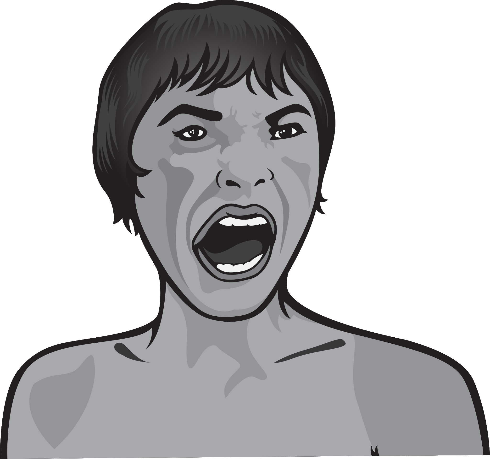

Italian cinematographic subgenre.
It derived from the thriller and of horror movies, which had special validity during the 70s, epoch in which he enjoyed a considerable commercial success.
Italian cinematographic subgenre.
It derived from the thriller and of horror movies, which had special validity during the 70s, epoch in which he enjoyed a considerable commercial success.
Janet Leigh
Alfred Hitchcock (1960)
